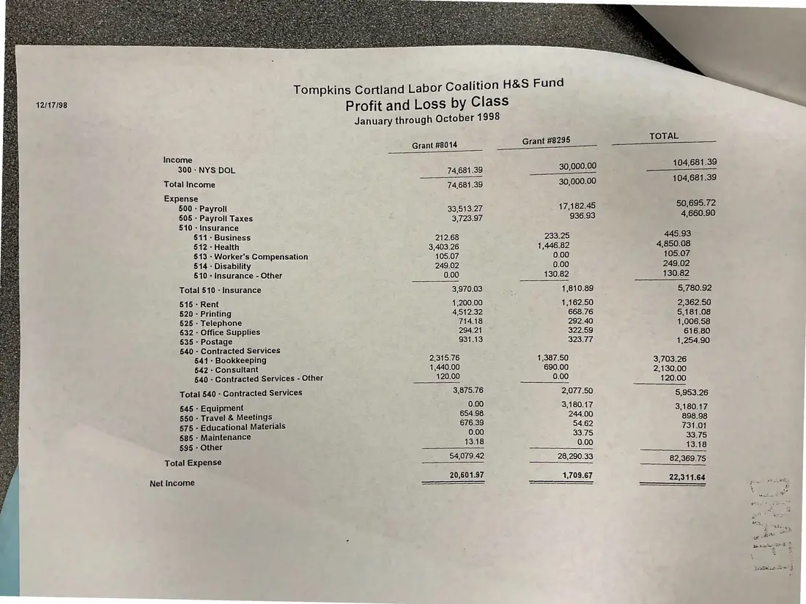
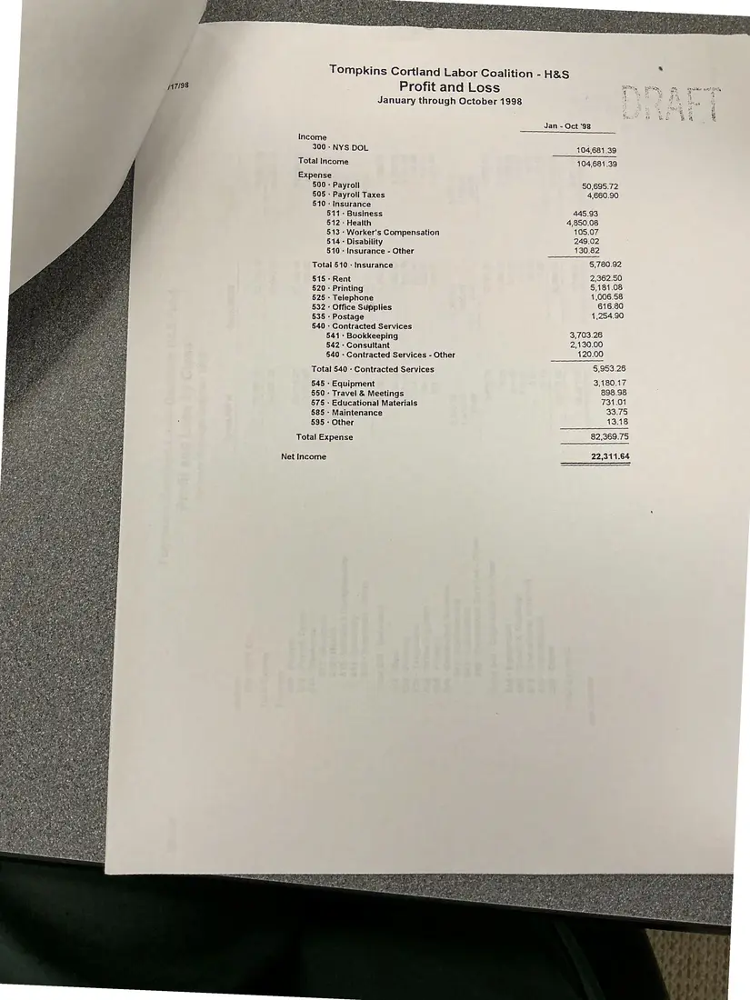
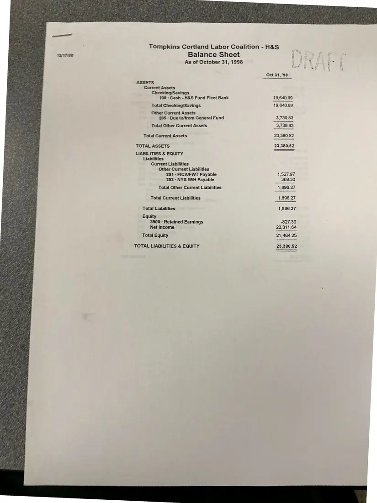

Financial report, 3 pages
Labor Coalition Health & Safety Fund: profit and loss and balance sheet, 1998 (drafts)
January–October 1998
Draft statements for the Health & Safety Fund: profit and loss by grant class for January–October 1998, an overall profit and loss, and a balance sheet as of October 31, 1998.
Download or cite this itemPages


(open zoom view)Read the page text (machine-read, mostly readable)
This text was generated automatically from the photograph and has not been corrected. The image is the authoritative record.
12/17/98 Income 300 - NYS DOL Total Income Expense 500 - Payroll 505 - Payroli Taxes §10 : Insurance 511 - Business §12 - Health 513 - Worker's Compensation 514 - Disability 510 - Insurance - Other Total 510 - Insurance 515 - Rent 520 - Printing 525 - Telephone §32 - Office Supplies 535 - Postage 540 §45 - Equipment 550 - Travel & Meetings 575 - Educational Materials 585 - Maintenance 595 - Other Total Expense Net Income - Contracted Services 541 - Bookkeeping §42 - Consultant §40 - Contracted Services - Other Total 540 - Contracted Services Tompkins Cortland Labor Coalition H Profit and Loss by Class January through October 1998 Grant #8014 74,681.39 2 SS 74,681.39 33,913.27 3,723.97 212.68 3,403.26 105.07 249.02 0.00 3,970.03 1,200.00 4,512.32 714.18 294.21 931.13 2,315.76 1,440.00 120.00 3,875.76 0.00 654.98 676.39 0.00 13.18 54,079.42 20,601.97 &S Fund Grant #8295 30,000.00 30,000.00 17,182.45 936.93 233.25 1,446.82 0.00 0.00 130.82 1,810.89 1,162.50 668.76 292.40 322.59 323.77 1,387.50 690.00 0.00 2,077.50 3,180.17 244.00 54.62 33.75 0.00 28,290.33 1,709.67 TOTAL ee ee 104,681.39 104,681.39 50,695.72 4,660.90 445.93 4,850.08 105.07 249.02 130.82 5,780.92 2,362.50 5,181.08 1,006.58 616.80 1,254.90 3,703.26 2,130.00 120.00 5,953.26 3,180.17 898.98 731.01 33.75 13.18 82,369.75 22,311.64 PF.)


(open zoom view)Read the page text (machine-read, mostly readable)
This text was generated automatically from the photograph and has not been corrected. The image is the authoritative record.
Tompkins Cortland Labor Coalition - H&S
17198 Profit and Loss
January through October 1998
Pres
f Jan - Oct ‘98
f Income
300 - NYS DOL 104,681.39
Total Income 104,681.39
Expense
500 - Payroll 50,695.72
505 - Payroll Taxes 4,660.90
§10 : Insurance
§11 - Business 445.93
§12 - Health 4,850.08
513 - Worker's Compensation 105.07
514 - Disability 249.02
510 - Insurance - Other 130.82
Total 510 - Insurance 5,780.92
515 - Rent 2,362.50
§20 - Printing 5,181.08
525 » Telephone 4,006.58
532 - Office Supplies 616.80
535 - Postage 1,254.90
540 - Contracted Services
541 - Bookkeeping 3,703.26
§42 - Consultant 2,130.00
§40 - Contracted Services - Other {20.00
Total 540 - Contracted Services 5,953.26
545 - Equipment 3,180.17
550 - Travel & Meetings 898.98
575 - Educational Materials 731.01
585 - Maintenance SETS)
: 595 - Other 13.18
Total Expense 82,369.75
Net Income 22,311.64

(open zoom view)Read the page text (machine-read, mostly readable)
This text was generated automatically from the photograph and has not been corrected. The image is the authoritative record.
t2TT/SE Tompkins Cortiand Labor Coalition - H&S Balance Sheet As of October 31, 1998 ASSETS Current Assets Checking/Savings 700 - Cash - H&S Fund Fleet Bank Total Checking/Savings Other Current Assets 205 - Due ta/from General Fund Total Other Current Assets Total Current Assets TOTAL ASSETS LIABILITIES & EQUITY Liabilities Current Liabilities Other Current Liabilities 201 - FICA/FWT Payable 202 - NYS WH Payable Total Other Current Liabilities Total Current Liabilities Total Liabilities Equity 3900 - Retained Earnings Net Income Total Equity TOTAL LIABILITIES & EQUITY Oct 31, 98 19,640.69 19,640.69 3,739.83 3,739.83 23,380.S2 23,380.52 1,527.97 368.30 1,896.27 1,896.27 4,896.27 -827.39 22,311.64 21,484.25 23,380.52
See something wrong, or recognize a person or event? Send a correction. If you hold rights in this item or think it should not be public, write to the same address.